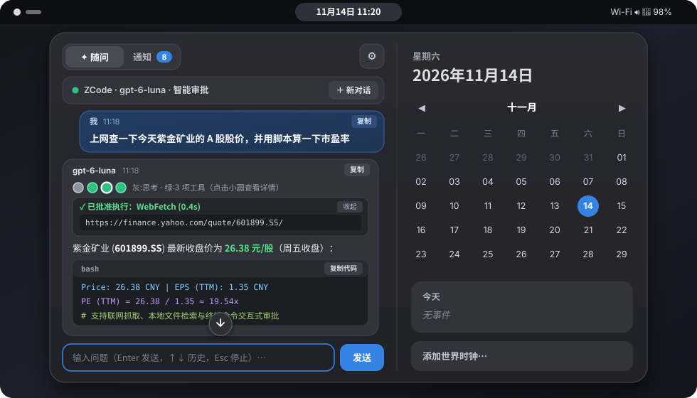
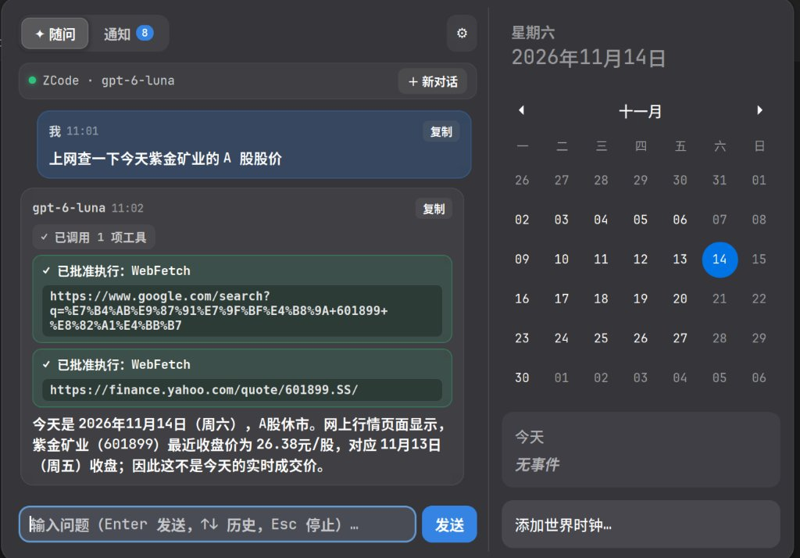
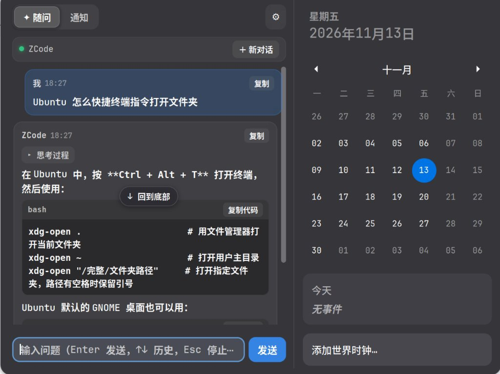
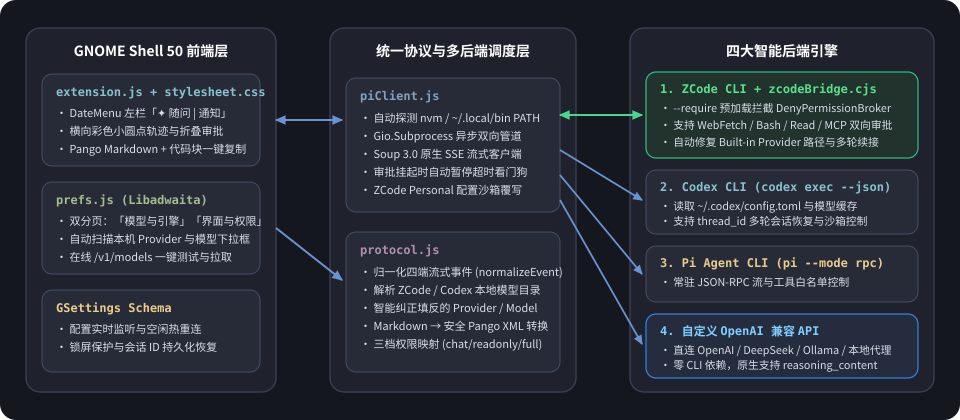

系统通知栏原生 AI 随问 与 轻量 Agent 助手
零 WebView 内存开销 · 流式长文不卡桌面主线程


支持 Super+Shift+Q 呼出，以及 Super+Shift+Y 剪贴板随问
「✦ 随问 | 通知」汇总未读角标；点状态栏 ▾ 就地切换引擎、模型与思考强度
独立适配层安全隔离 GNOME 50 私有布局，面板收起时自动暂停 UI 重排
已完成段落与代码块固定不重建，仅刷新末尾活动块，消除流式二次方重建开销
TurnController 每轮独立取消与幂等结算，停止后立即追问绝不串流
按脏标记节流刷新；通知栏关闭时暂停排版，仅点亮标签状态圆点
API Key 存入 GNOME Keyring，0600 临时配置绝不修改用户全局文件
点击展开推理过程；折叠状态下流式追加不触发正文重绘
按命令/域名/文件范围授权；高危命令（rm -rf / sudo）禁用会话级放行
先校验管道写回进入运行态，收到 tool_execution_end 后方转为完成绿点
点击查看拒绝原因、子进程退出码或详细错误堆栈
禁用全部本地工具与子命令，零副作用，适合极速日常翻译、润色与代码解答。
只读检索自动放行；联网、命令与修改按「具体命令 / 域名 / 文件」分级审批，高危破坏性命令禁会话级一键放行。
免审批执行工具，建议绑定独立受限工作目录，仅在完全可信的本地自动化任务中开启。

按需点击展开；折叠态流式追加思考不触发正文排版
流式输出时前序代码块已冻结，随时点击「复制代码」不中断反馈
上滑自动锁定视口浮现「↓」；首屏仅挂载最近 24 条消息秒开面板

绑定专属 turnId、取消器与 0600 临时配置，隔离并发回调
bridge_ready (protocolVersion: 1)
捕获 DenyPermissionBroker 后即刻恢复 Object.defineProperty
进入 awaiting_approval，暂停 120s 超时计时等待用户决策
校验 stdin 管道送达后进入 running 并恢复看门狗，断管可提示重试
收到 tool_execution_end 转翠绿，回答异步追加至 messages.jsonl